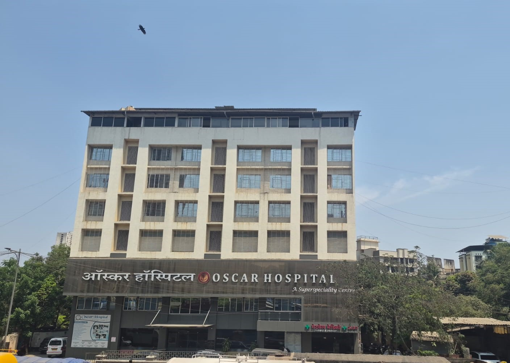
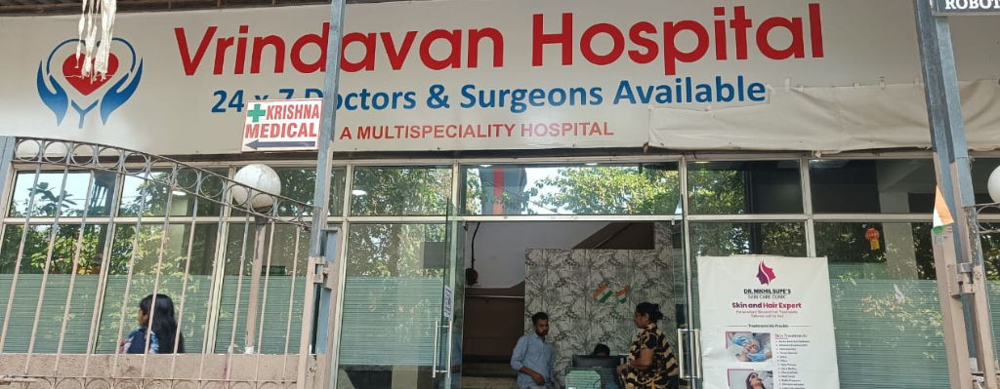
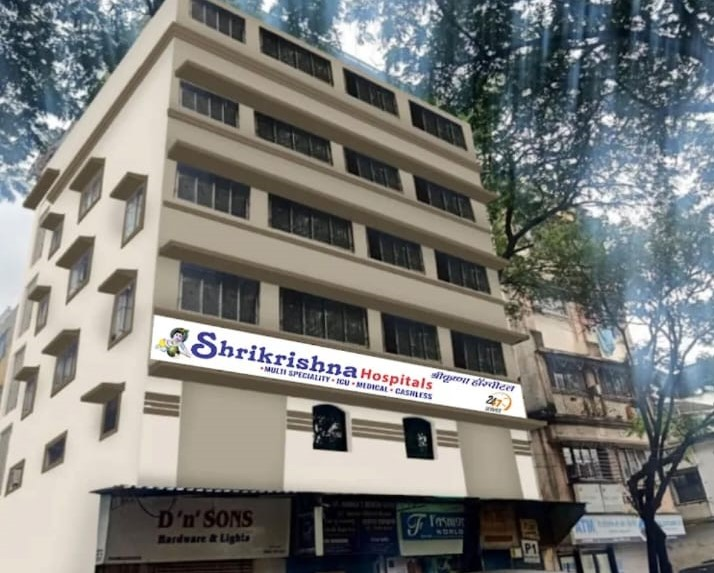
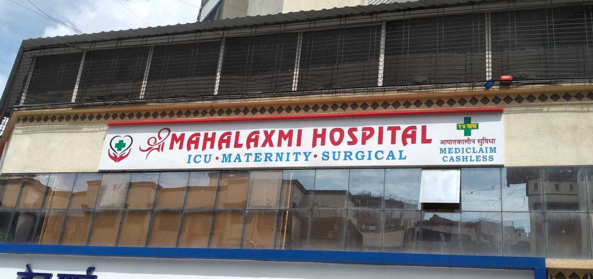
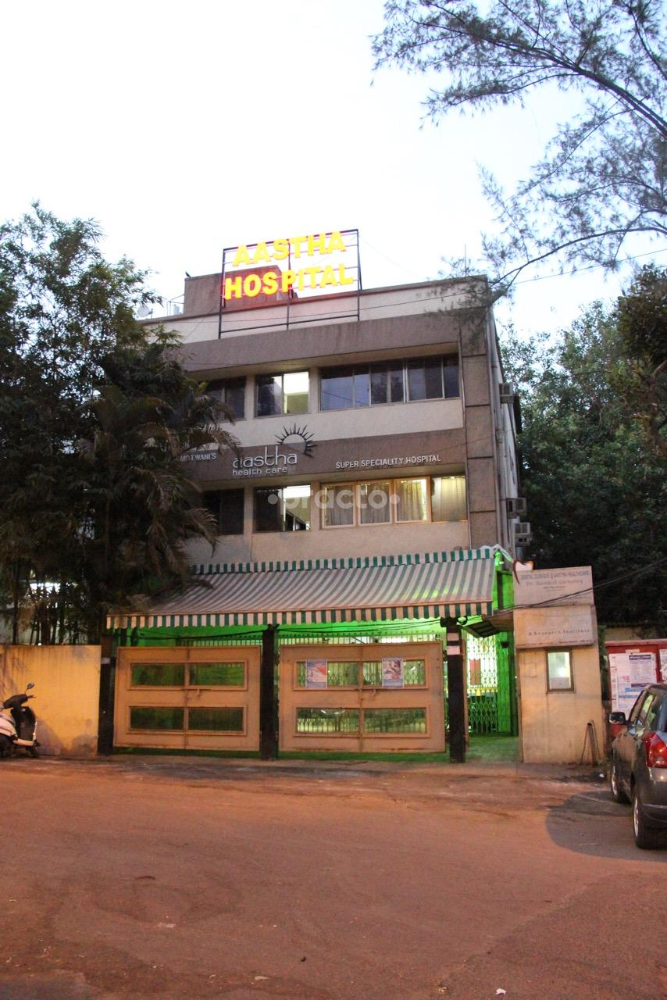

Delivering patient-centered nutrition care and therapeutic diet planning to support recovery and long-term health outcomes.

Currently associated as a Clinical Dietitian at Oscar Hospital, working closely with healthcare professionals to provide evidence-based nutrition care tailored to each patient.
The focus includes nutritional management for diabetes, cardiac care, kidney disorders, weight management, and gastrointestinal conditions.
With continuous monitoring, customized diet plans, and patient education, the aim is to promote sustainable lifestyle changes and improve overall well-being.
A Multispeciality Hospital
Thane West, Maharashtra, India
currently practicing as a Clinical Dietitian at Vrindavan Hospital, collaborating with doctors and healthcare professionals to deliver personalized medical nutrition therapy.
Our work focuses on diet planning and nutritional management for conditions such as diabetes, cardiac diseases, weight management, digestive disorders, and metabolic health.
Through continuous monitoring, patient education, and structured dietary guidance, our goal is to help patients achieve sustainable and healthy lifestyle changes.
A Multispeciality Hospital
Thane, Maharashtra, India


Gained valuable clinical experience at Shrikrishna Hospital, working closely with healthcare professionals to support patient care and treatment plans.
Contributed to patient management, assisted in medical procedures, and ensured quality care across different departments including ICU and surgical units.
Focused on delivering patient-centered care, improving recovery outcomes, and maintaining high standards of healthcare practice.
Multi-Speciality Hospital
Gloria Building, D’Mello Compound
Station Road, Bhayandar West
Maharashtra, India
previously worked as a Clinical Dietitian at Shree Mahalaxmi Hospital, where we collaborated with doctors and healthcare professionals to develop evidence-based diet plans for patients.
Our responsibilities included nutritional assessment, therapeutic diet planning, and counseling patients suffering from diabetes, hypertension, digestive disorders, and other medical conditions.
Through personalized nutrition guidance and patient education, We helped individuals adopt healthier eating habits to support treatment, recovery, and long-term wellness.
ICU • Maternity • Surgical Care
Mira Road, Thane, Maharashtra, India

Practical clinical training in hospital dietetics and patient care through intensive internship rotations.
Completed three intensive clinical rotations at Kokilaben Hospital, gaining practical exposure to hospital dietetics, therapeutic nutrition, and patient dietary management.
During this internship, I worked under experienced clinical dietitians and healthcare professionals to understand the nutritional needs of hospitalized patients across various departments.
Our responsibilities included assisting in diet planning, patient counselling, nutritional assessment, and learning evidence-based clinical nutrition practices.
Four Bungalows, Andheri West
Mumbai, Maharashtra, India
Specialized internship focused on bariatric nutrition and metabolic health management.
Completed an internship at Aastha Bariatric Centre, where I gained practical experience in bariatric and metabolic nutrition therapy.
The training focused on weight management strategies, dietary planning for obesity treatment, and nutritional guidance for patients undergoing bariatric surgery.
We assisted in designing pre- and post-bariatric diet plans, monitored patient progress, and learned specialized nutritional protocols to support metabolic health and long-term lifestyle changes.
Mulund, Mumbai
Maharashtra, India

Experience in pharmaceutical research and laboratory operations, supporting scientific analysis and research development processes.
Worked as a Senior Scientific Assistant at Zydus Research Centre, contributing to pharmaceutical research and scientific laboratory processes.
Our responsibilities included supporting research teams with scientific analysis, assisting in laboratory operations, and ensuring accurate documentation of research procedures.
This experience strengthened my understanding of pharmaceutical research methodologies, laboratory protocols, and quality standards used in scientific research environments.
Ahmedabad
Gujarat, India
Practical experience in pharmaceutical analytical development, laboratory research, and scientific testing processes.
Worked as a Research Associate in the Analytical Development Laboratory at INTAS Biopharma Ltd, gaining practical exposure to pharmaceutical research and analytical testing procedures.
Our responsibilities included assisting in analytical method development, supporting pharmaceutical testing, and maintaining laboratory documentation according to research protocols.
This role provided valuable experience in research laboratory practices, analytical instrumentation, and pharmaceutical quality testing standards.
Analytical Development Lab – R&D
Ahmedabad, Gujarat, India
Experience in operational excellence and process optimization within the pharmaceutical industry.
Worked as an Operational Excellence Executive at Pharmalink Ltd, focusing on improving operational efficiency and strengthening quality-driven processes across departments.
Our role involved supporting cross-functional teams, monitoring operational workflows, and implementing process improvements to enhance productivity and maintain quality standards.
This experience helped develop strong skills in process management, team collaboration, and operational strategy within the pharmaceutical industry.
Ahmedabad
Gujarat, India